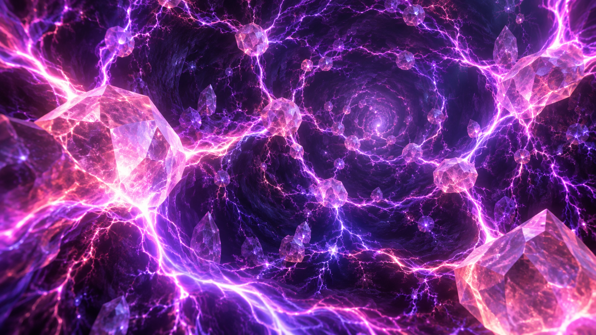
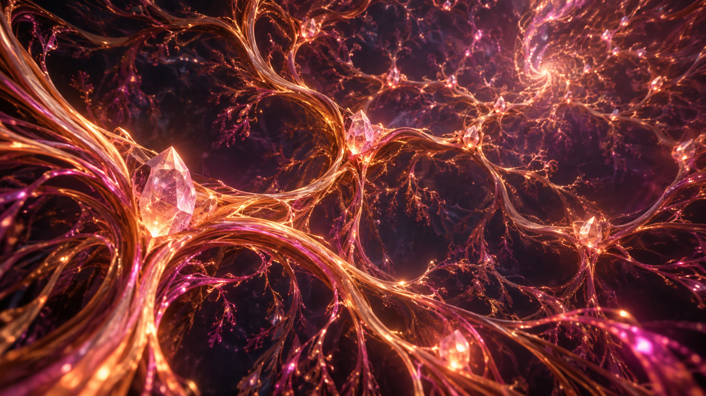
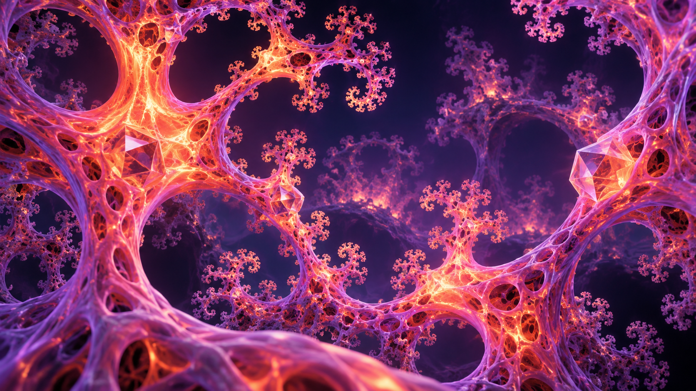
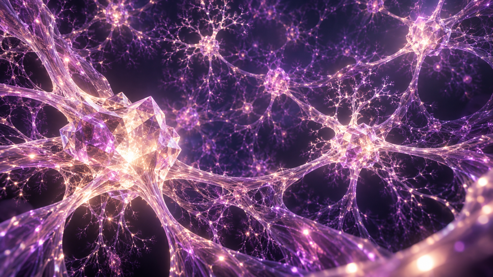
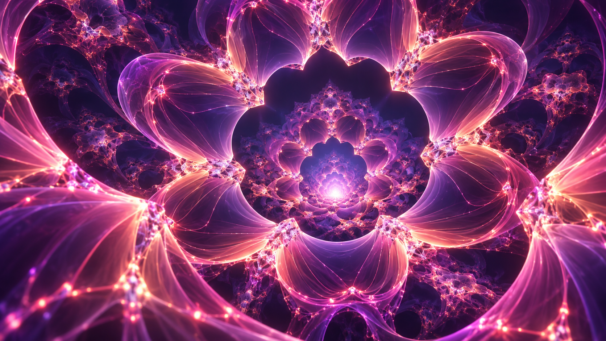
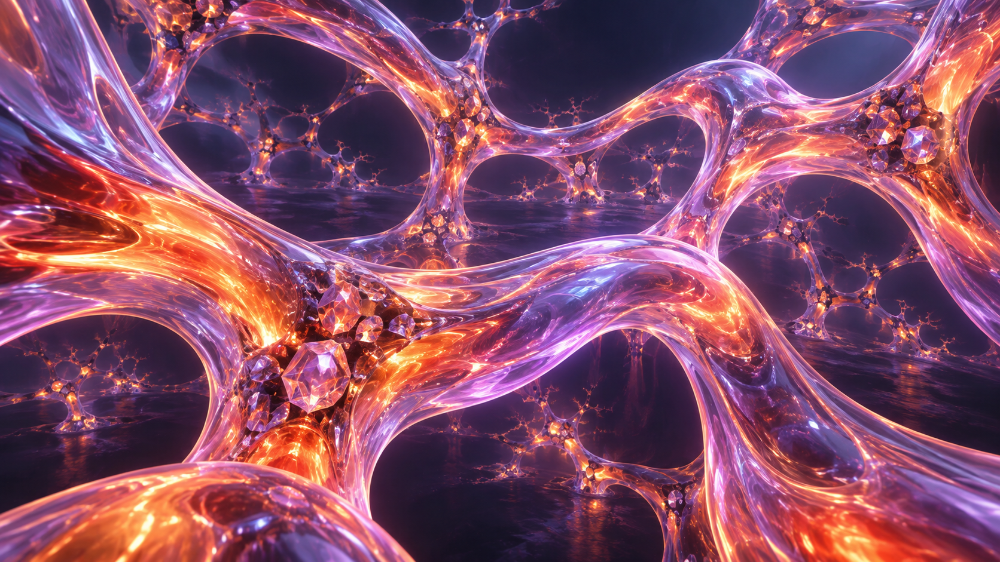
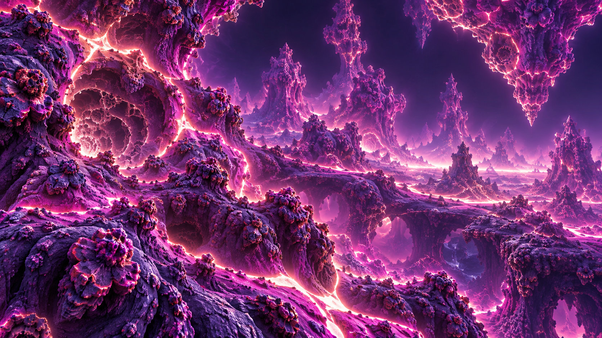
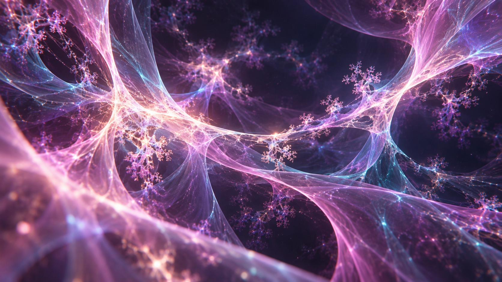
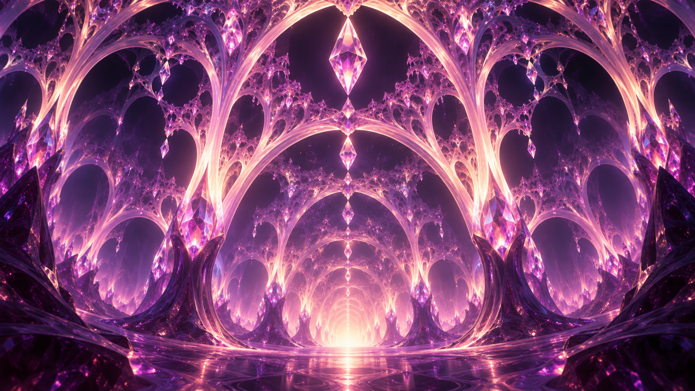

Ten shaders · visual review
Live shader library · Open Source page · Capture evidence
These are procedural real-time interpretations of the reference art, not image-perfect reproductions. Each video records five seconds of camera travel at 1440 × 554. The MP4 files use a 30 FPS timeline; actual rendered frame counts are listed in the capture evidence. Lightweight rendering approximates glass and lighting rather than reproducing offline ray-traced refraction.
01 — Living Lightning
Initial connections were sparse. Replaced the field with warped filaments, tightened their width and restored bright cores and bloom.
Generated reference
Implemented shader · five-second camera traversal Explore live · Open video · End frame
02 — Luminous Roots
Initial roots were too bulky. Reduced the branch width and added warm surface grain, fine veins and edge glow.
Generated reference
Implemented shader · five-second camera traversal Explore live · Open video · End frame
03 — Fractal Coral
Initial coral read as solid sheets. Rebuilt it as connected, perforated geometry at multiple scales.
Generated reference
Implemented shader · five-second camera traversal Explore live · Open video · End frame
04 — Ribbon Vortex
Reduced broad bands into thinner twisting ribbons, with luminous edges and small crystalline junctions.
Generated referenceImplemented shader · five-second camera traversal
Explore live · Open video · End frame
05 — Crystal Mycelium
Reduced thread thickness and added fine secondary connections and travelling light pulses.
Generated reference
Implemented shader · five-second camera traversal Explore live · Open video · End frame
06 — Recursive Bloom
Opened gaps between nested petal forms and added fine luminous veins to clarify the layers.
Generated reference
Implemented shader · five-second camera traversal Explore live · Open video · End frame
07 — Molten Glass
Initial glass read as opaque sheets. Rebuilt it as smooth connected tubes with warm internal-looking noise and bright rims.
Generated reference
Implemented shader · five-second camera traversal Explore live · Open video · End frame
08 — Neon Mandelbulb
Kept a bounded five-iteration Mandelbulb distance field; strengthened contour lighting and checked the camera clearance.
Generated reference
Implemented shader · five-second camera traversal Explore live · Open video · End frame
09 — Aurora Weave
Opened the closed shells into separated flowing sheets, with cyan/pink lighting and fine veins.
Generated reference
Implemented shader · five-second camera traversal Explore live · Open video · End frame
10 — Fractal Cathedral
Removed the dense straight branch field and replaced it with nested curved arches and thinner ribs.
Generated reference
Implemented shader · five-second camera traversal Explore live · Open video · End frame